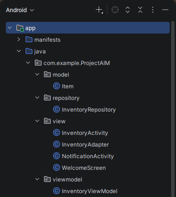
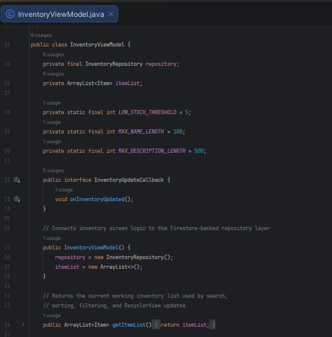
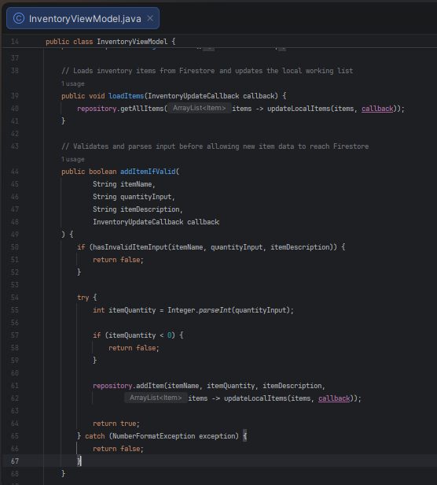
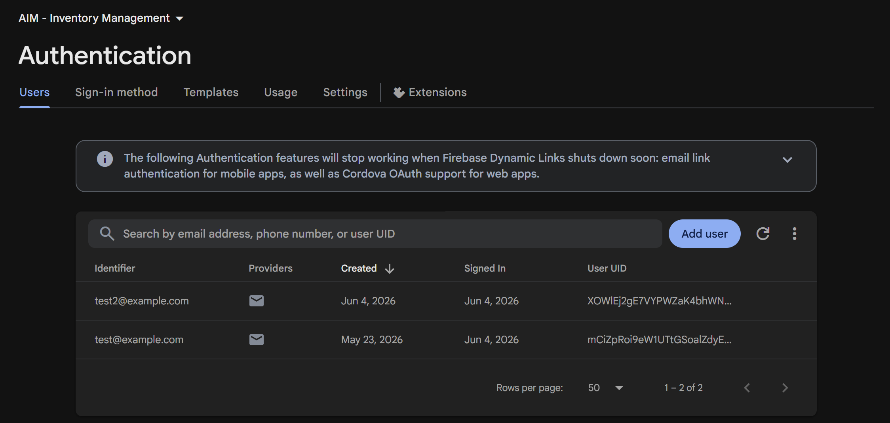

Artifact Overview
The artifact I have selected for the Category One enhancement is my inventory management application called A.I.M, which stands for Agile Inventory Management. This artifact is an Android mobile application that I originally created in CS-360: Mobile Architecture and Programming. The application allows users to sign in and create accounts, manage inventory items by updating and deleting items as well as adding items, and manage SMS notification permissions. For this enhancement, I focused on this category by improving the architecture, structure, maintainability, documentation, validation, and credential authentication in the application.
Justification of Selected Artifact
I selected this artifact for my ePortfolio because I recognized post-completion that there were improvements that could be made which would allow me to demonstrate my ability to take an existing application and improve it beyond its original requirements. The original version worked, but several parts of the code were coupled together that created concerns related to separation: UI logic, validation, and database access were not separated as they could have been. This made the artifact a good choice for this category because it gave me an opportunity to improve the application’s architecture and better understand how design affects maintainability.
I started first with organizing the code into separate packages for the view, viewmodel, repository, data, and model layers. This helped separate responsibilities across the application. Through this process, I learned that architecture is not just about where files are placed, but also about making sure each class has a clear purpose. For example, InventoryActivity and InventoryAdapter now focus more on UI behavior, while InventoryViewModel handles validation and coordinates inventory updates. Additionally, InventoryRepository now acts as a middle layer between the ViewModel and DatabaseHelper, which helped me understand how a repository layer can reduce dependency between parts of an application and make future changes easier to manage.

I also improved the artifact by adding validation and defensive programming. The enhanced version checks for invalid inventory inputs, such as empty item name, empty quantities, invalid quantities, email formatting, try/catch blocks, and password length requirements. I also reduced redundant and repetitive code by using helper methods where the same logic was needed in multiple places. For example, the signIn and createAccount methods both need to validate email and password input, so I centralized that shared validation into a helper method instead of repeating the same checks in both methods. This taught me how small refactoring decisions can make code easier to read, easier to update, and make the responsibilities of each method clearer.


Another major improvement was replacing how login credentials are stored by replacing the original SQLite with Firebase Authentication. This was an important design improvement because user credentials are no longer stored locally in plaintext. Through this change, I learned more about how authentication should be handled and how security should be considered a part of software design, as well as how easy it is to integrate solutions like Firebase for such purposes. Finally, I updated the comments throughout the code so they explain the purpose and reasoning behind design choices instead of only describing what each line does.

Course Outcomes with Category One
After completing this enhancement, I found that the artifact still aligns with the course outcomes I identified in my plan: outcomes 2, 3, 4, and 5. It supports outcome 2 because I improved the clarity of the code through documentation and comments that explain the purpose and reason behind design decisions. Next, it supports outcome 3 because I evaluated the original application design and made trade-offs related to structure, maintainability, validation, and security. For example, I chose to refactor the app toward a MVVM architecture and add a repository layer so the application would have better separation of concerns. This required balancing simplicity with better organization as I wanted the app to be more maintainable without making the project unnecessarily complex.
Furthermore, it supports outcome 4 because I used software engineering techniques to improve the application. The MVVM architecture, repository layer, Firebase Auth, validation, and improved documentation all helped make the application more maintainable, secure, and structured clearly. These changes improved the artifact because the application is now easier to understand, update, and extend. Lastly, it supports outcome 5 because I improved the security of the application by replacing the local SQLite login system with Firebase Auth, which resolved the storing of login credentials in plaintext. As a result, no significant updates to my original outcome-coverage plan were necessary because the enhancement fully supports the intended course outcomes I aimed to cover.
Reflection on Enhancement Process
While enhancing this artifact, I started to see the original application differently. The app worked, but the enhancement process showed me that working code is not always the same as well-structured code with solid design decisions. As I made changes, I had to think more about how each class should be responsible for one part of the application and how those responsibilities affect future development. This is why I focused on migrating to a MVVM architecture to alleviate issues regarding separation of concerns. Refactoring the app helped me to see why architecture patterns like MVVM are useful. They are not just about making the project look organized, but they also reduce dependencies between classes and make the application easier to test, update, and expand.
I also learned more about balancing clean design with simplicity. Since this is a small application, I had to think carefully about whether each change improved the code or added unnecessary complexity. For example, centralizing repeated validation into a helper method made sense because both signIn and createAccount used the same checks. At the same time, I had to avoid over-engineering simple model and repository methods that were already clear. This helped me to think more critically about design trade-offs.
One challenge I faced involved integrating Firebase Auth and changing the login flow from username-based to email/password authentication. This required updates to the code, validation logic, Gradle files, Firebase setup, and some UI wording. Additionally, I had to adjust .gitignore to prevent public exposure of the API key used for Firebase services when committing code to Git. Another challenge involved determining the responsibilities of each class. While straightforward in some areas, there were some instances where I had considered moving ViewHolder out of InventoryAdapter and into its own file but decided against it because ViewHolder only supports that adapter row layout. Keeping it nested made more sense because it kept closely related UI code together without adding unnecessary class files. This helped me think more carefully about separation of concerns and avoid adding structure just for the sake of adding structure.
Overall, this enhancement improved both the artifact and my understanding of software engineering. The application is now more modular, more secure, and easier to maintain. More importantly, the process helped me practice making design decisions based on maintainability, security, and separation of concerns rather than only focusing on whether the application runs.